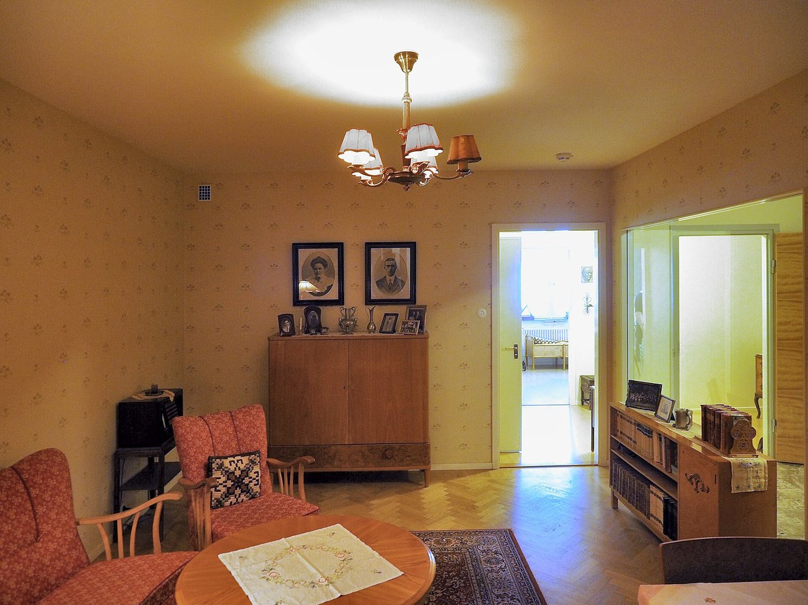
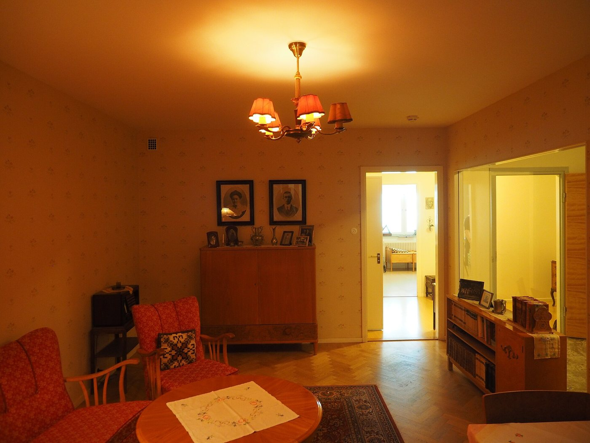
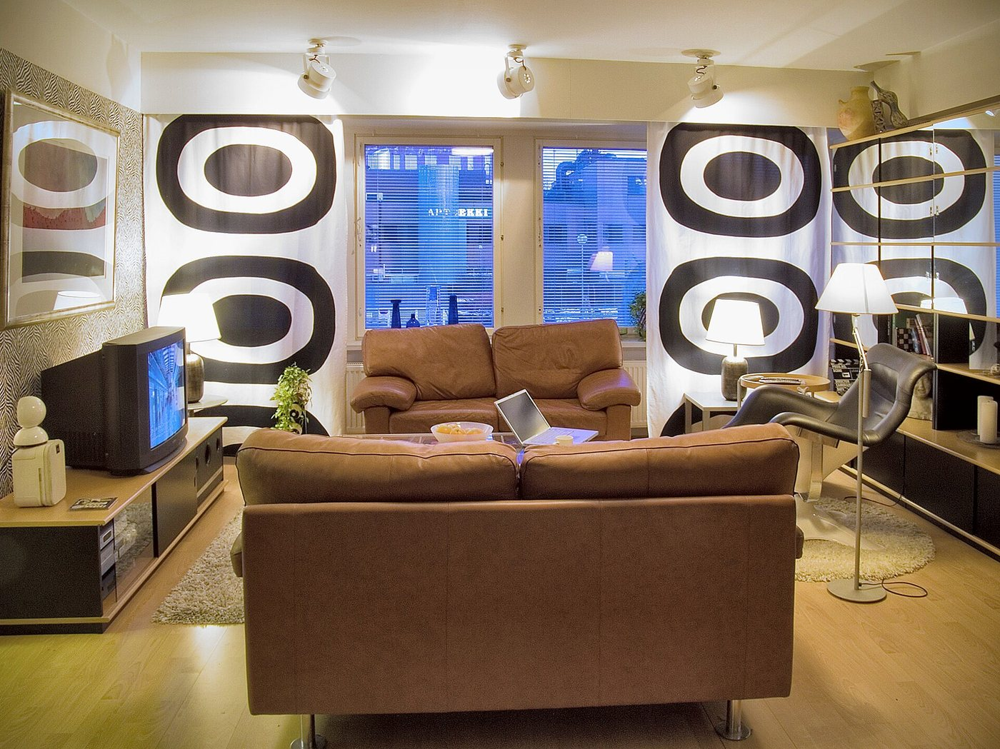
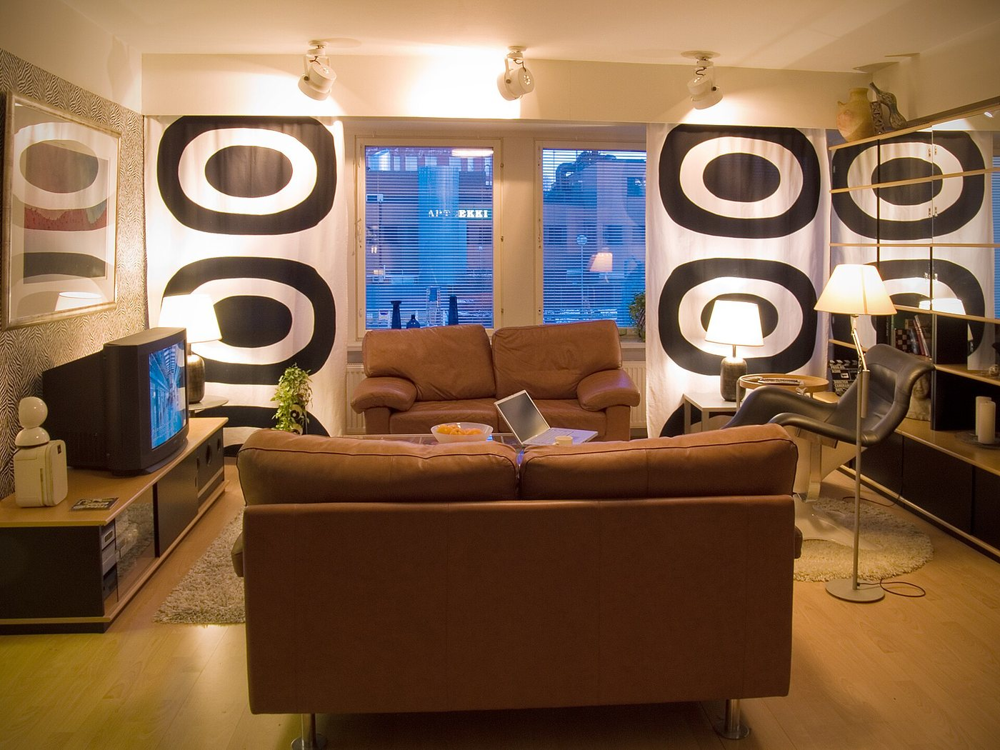
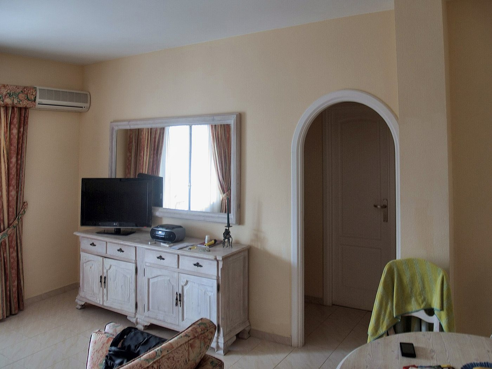
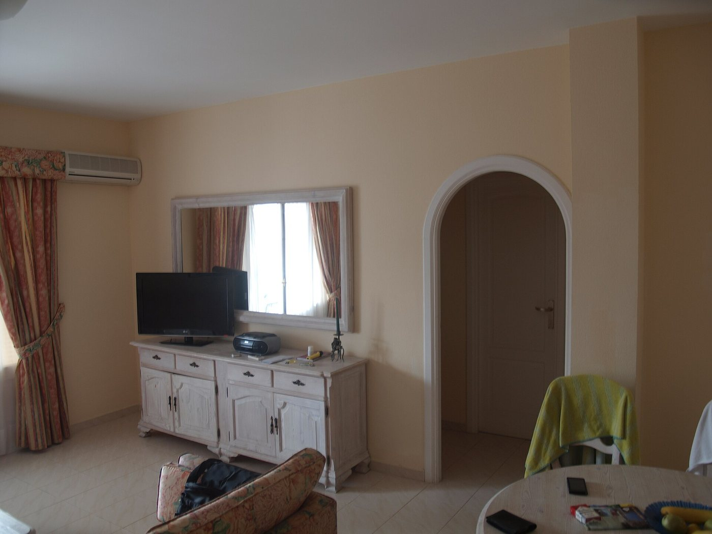
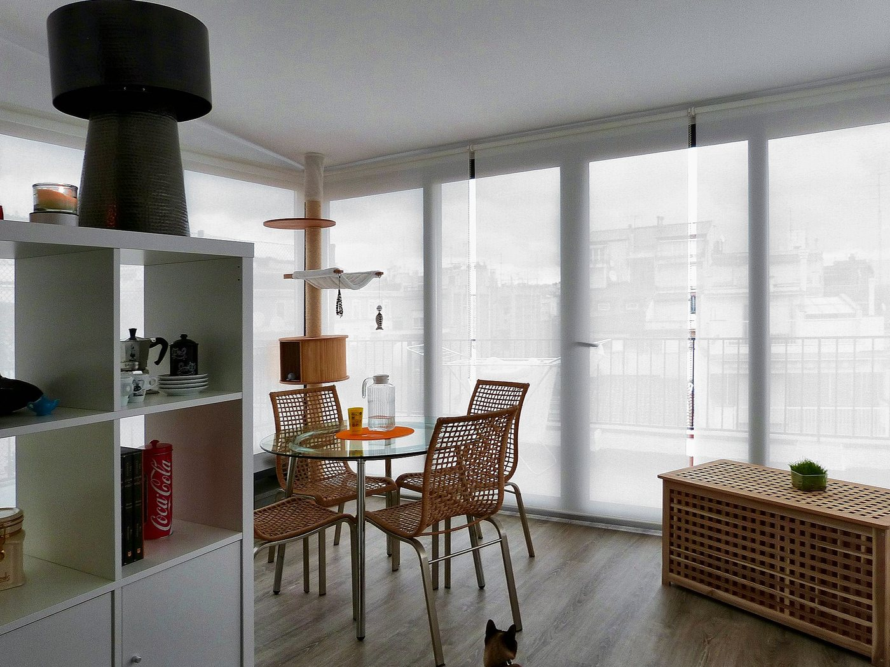
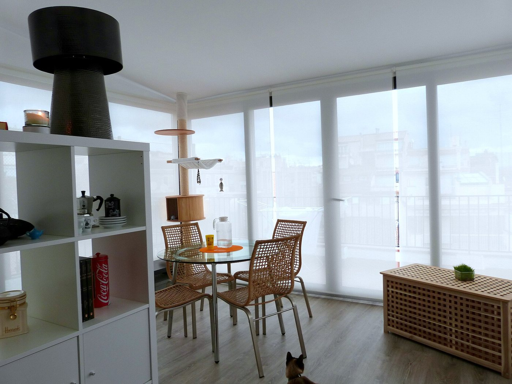

Emlak fotoğraflarında en sık üç sorun var: ampul ışığının boyadığı sarı-turuncu duvarlar, karanlık köşeler ve eğik tutulan telefondan yamulan duvar çizgileri. Aşağıdaki örneklerde çizgiyi sürükleyerek önce ve sonrasını karşılaştırabilirsiniz.
Renk dengesi düzeltildi, duvarlar gerçek rengine döndü; lamba ve kapı ışığı patlamadan korundu.


ÖnceSonraGölgeler açıldı, sarı ton temizlendi, pencere dışı korunarak ortam aydınlatıldı.


ÖnceSonraPozlama ve kontrast düzeltildi, eğilen duvar çizgileri dikleştirildi.


ÖnceSonraKadraj döndürülüp dikeyler (pencere, raf) düz hâle getirildi.


ÖnceSonra